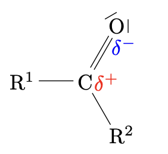
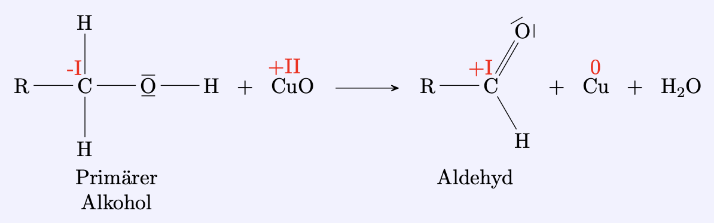
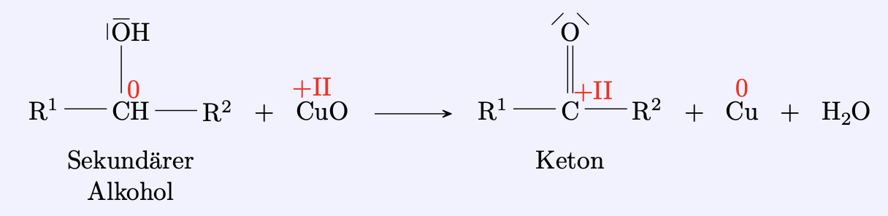
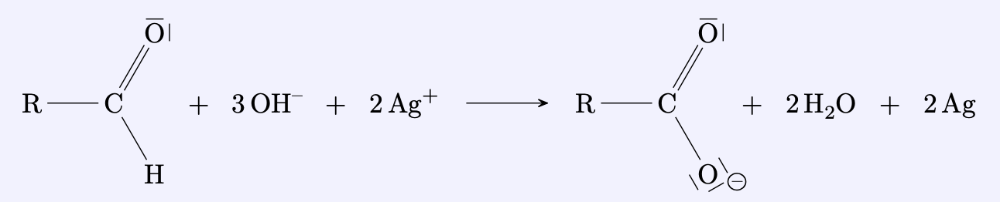

Aldehyde und Ketone
Carbonylverbindungen
Aldehyde und Ketone enthalten eine Carbonylgruppe. Man bezeichnet sie als Carbonylverbindungen.
Grundlagen
Aldehyde
Aldehyde enthalten eine Carbonylgruppe, an welche ein Wasserstoffatom gebunden ist.
-
Die Carbonylgruppe befindet sich auf dem letzten C-Atom der Kohlenstoffkette: sie ist endständig.
-
Die vereinfachte Schreibweise ist $\ce{R-CHO}$.
-
Die Namen der Aldehyde sind gekennzeichnet durch die Endung –al.
-
Aldehyde deren Moleküle auβer der Carbonylgruppe keine weiteren funktionellen Gruppen enthalten bezeichnet man als Alkanale.
Ketone
Ketone enthalten eine Carbonylgruppe, an welche zwei Alkylreste gebunden sind.
-
Die vereinfachte Schreibweise ist $\ce{R_1-CO-R2}$.
-
Die Namen der Ketone sind gekennzeichnet durch die Endung –on.
-
Ketone deren Moleküle außer der Carbonylgruppe keine weiteren funktionellen Gruppen enthalten bezeichnet man als Alkanone.
Physikalische Eigenschaften
Die Carbonylgruppe ist aufgrund der hohen Elektronegativität von Sauerstoff stark polar. Sie kann jedoch mit einer anderen Carbonylgruppe keine Wasserstoffbrückenbindungen bilden da sie kein $\Delta \bigoplus$ geladenes Wasserstoffatom enthält.
Die vorherrschenden zwischenmolekularen Kräfte in den Aldehyden und Ketonen sind Dipol- Dipol-Wechselwirkungen und van-der-Waals-Kräfte.
Siedepunkte
Die Siedepunkte der Alkanale und Alkanone sind höher als die der entsprechenden Alkane, jedoch niedriger als die der entsprechenden Alkanole.
Tabelle der zwischenmolekularen Kräfte
Name |
Zwischenmolekulare Kräfte |
|---|---|
Alkane |
van-der-Waals-Kräfte |
Alkene |
van-der-Waals-Kräfte; |
Alkanale |
van-der-Waals-Kräfte; |
Alkanole |
van-der-Waals-Kräfte; |
Alksäuren |
van-der-Waals-Kräfte; |
Löslichkeit
Carbonylgruppen können mit Wassermolekülen Wasserstoffbrückenbindungen
bilden, da das Wassermolekül das hierzu benötgte $\ce{H}$-Atom mit hoher
positiver Ladungsdichte mitbringt.
Die erste Glieder der beiden
homologen Reihen sind in Wasser gut löslich; mit steigender Gröβe
der Alkylreste nimmt deren hydrophober Einfluss zu und die Löslichkeit
nimmt ab.
Darstellung von Aldehyden
Aldehyde entstehen bei der sanften Oxidation von primären Alkoholen.
Darstellung von Ketonen
Ketone entstehen bei der sanften Oxidation von sekundären Alkoholen.
Silberspiegelprobe
Aldehyde werden durch Silberionen in alkalischer Lösung zu Carbonsäuren oxidiert. Bei der Reaktion entsteht metallisches Silber, welches sich als ”Silberspiegel” an den Gefäßwänden absetzen kann.
Ketone können nicht durch Silberionen zu Carbonsäuren oxidiert werden. Sie reagieren nicht in der Silberspiegel-Probe.